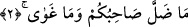

yıldızın yol gösterdiğine işâret etmek içindir. Sanki bu âyette: “Karada ve denizde
seyahat eden yolcunun kendisiyle doğru yolu ve güzergâhı bulduğu yıldıza yemin olsun”
denilmek istenmiştir.
2. Arkadaşınız (Muhammed) sapmadı ve bâtıla inanmadı;
“Arkadaşınız (Muhammed) sapmadı.” Burası kasemin cevap cümlesi olup
“arkadaşınız âhirete götüren hakk yoldan sapmadı” anlamındadır. Yine bu cümle: “Seni
şaşırmış bulup da yola iletmedi mi?” (ed-Duhâ, 93/7) kavlinin delilini teşkil
etmektedir. Âyet-i kerîme’deki sapıklıktan kasıd, isyan değildir. Zira Rasûlullah (a.s.)
vahyin öncesinde de sonrasında da Rabb’ine ibâdetten, O’nu birlemekten ve çirkin
gördüğü amellerden sakınmaktan hiç geri durmadı. Öyleyse bu âyetin maksadı
Rasûlullah (s.a.)’in fazîletini işâret etmektir. Şöyle ki: Allah Teâlâ O’nun hakkında
“Arkadaşınız sapmadı” buyururken Âdem (a.s.)’la ilgili olarak “Âdem Rabb’inin
buyruğuna karşı geldi de şaşırdı” (Tâhâ, 20/121) buyurmuştur.
“Ve bâtıla inanmadı.” “Ğayy”, koyu câhilliktir. Râğıb, “ğayy” “fâsid bir i’tikaddan
kaynaklanan cehâlettir” demiştir. Bu nedenle câhillik; bazan insanın bir şeyin doğru ve
yanlış olduğuna i’tikad etmemesidir. Bazan de fâsid olan bir şeye i’tikad etmesidir ki bu
ikincisine “ğayy” denilir. Zirâ “ğayy” ve “dalâl” kavramları arasında fark vardır, aynı
anlama gelmezler. “Azgınlık” anlamına gelen “ğayy” ve “ğavâye” özellikle i’tikâdî bir
yanlışlığı ifâde ederken, “sapkınlık” anlamındaki “dalâl” ondan daha umûmî olup söz,
fiil, ahlak ve Allah Teâlâ’nın vaz’edip kullarına açıkladığı akâidle ilgili hususlardaki
yanlışlığı ifâde eder.
Âyetin mânâsı şudur: “Rasûlullah (a.s.) asla bâtıl bir inanç içinde olmadı. Yâni o, son
derece hidâyet ve rüşd içinde olup azıcık dahi olsa sizin ithamda bulunduğunuz sapıklık
ve azgınlık dâiresinde bulunmamıştır.” Çünkü müşrikler “Muhammed (a.s.) atalarının
dininden saptı, yoldan çıkıp kendi nefsinden birşeyler uydurdu” diyorlardı. Allah da bu
sûreyi onun şerefine işâret etmek için indirerek bizzat kendisi onlara cevap vermek
istemiştir. İşte bu nedenle buradaki hitap Kureyşlilere yöneliktir. Yine âyet-i kerîme’de
Rasûlullah (s.a.)’ın onların arkadaşı olduğunun “sâhibukum” kelimesiyle îrâd
edilmesinden maksad, onların Rasûlullah (a.s.)’ın her hâline ayrıntılarına kadar vâkıf
olduklarını ve onun kendisinden nefyedilen azgınlık ve sapkınlıktan tamamıyla uzak
olduğunu, hidâyet ve rüşdün zirvesinde bulunduğunu tam olarak bildiklerini açıklamak
içindir. Zira İrşad’da da zikredildiği üzere müşriklerin uzun zamandan beri onunla bir
arada yaşamaları ve onun yüce vazîfesinin güzelliklerini müşâhede imkânına sâhip
olmaları da kesinlikle bu birlikteliğin iktizâsının delilidir.
Kâşifî şöyle demiştir: Hz. Peygamber (s.a.)’in “sâhib” olarak isimlendirilmesi,